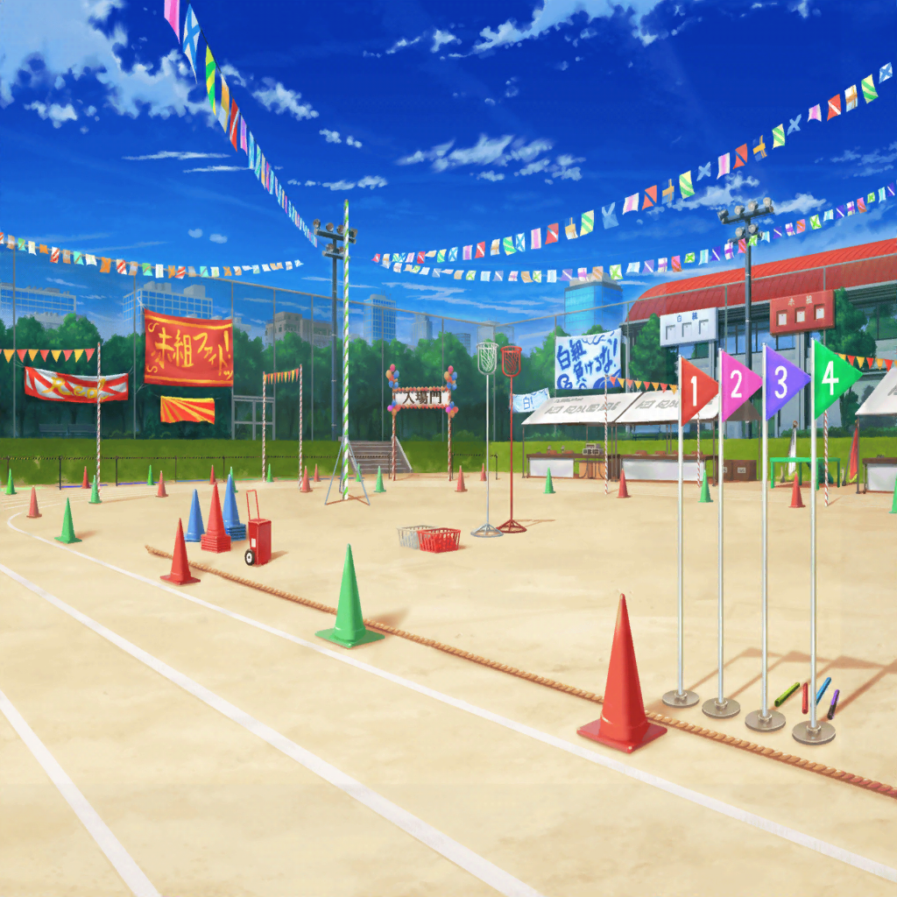

花咲川女子学園 グラウンド リレースタート地点
アナウンス
『それではこれより、最終競技、
花咲女子学園リレー対抗戦を始めます』
審判
位置について、よーい……
はぐみ
は、始まった……！
白組がリードしてる！
はぐみ
（次のコーナーで距離詰めないと……
あ！ 差がついちゃった……！ このままだと……）
はぐみ
……はぐみが頑張らないとダメだよね！
みんなに、はぐみが全力で頑張ってるところを
見てもらいたいもんっ！
アナウンス
『今、赤組のバトンがつながりました。
この後はアンカーへとつなぎます』
はぐみ
（次、はぐみの番……もう、迷わない……）
赤組チームメイト
はぐみ、よろしく！
はぐみ
うん！ 絶対……勝つ！
彩
見て～！
はぐみちゃんにバトンが渡ったよっ！
沙綾
はぐみ～！！
行っけぇ～！！
イヴ
ハグミさーん！ その調子ですよー！
有咲
が、頑張れ～！！
北沢さ～ん！！
香澄
わわっ、はぐ速い！？
白組抜かされちゃいそう……！
たえ
白組、頑張れー
りみ
え、えっと……み、みんな、頑張れー！
美咲
…………
花咲川女子学園 グラウンド 赤組陣地
アナウンス
『ただいまのリレーを持ちまして、全競技終了です。
みなさん、お疲れさまでした。
この後、閉会式を行いますので、しばらくお待ちください』
はぐみ
はぁ……はぁ……はぁ……終わった……
沙綾
はぐみ、お疲れー！！ やったね！
最後の最後で白組の人を抜いて
ゴールした時、思わず鳥肌立っちゃった！
イヴ
ハグミさんっ！
忍者も真っ青な、とても素晴らしい走りでした！
有咲
北沢さんのおかげで、リレーは勝ったし
これって私達赤組の勝ちってこと？
彩
うん、そうだよ！
はぐみちゃんのおかげだよ！！
やったー！ 我らが赤組の優勝だよ～♪
はぐみ
みんな……
香澄
はぐー！！
すっごい走りだったね！！
私、見てて感動しちゃったよ！！
たえ
私も感動した。
マンガの最終回くらい、感動した
有咲
マンガによるだろ！
りみ
私、白組だけど、
はぐみちゃんの一生懸命な走りを見てたら、
どっちも頑張れって思っちゃった
美咲
正直、白組がリードしてたから、
勝てるかなって思ったけど……
やっぱりはぐみは、すごかったねー
はぐみ
みんな……白組、負けちゃったんだよ？
くやしくないの？
香澄
もちろんくやしいよ！ すっごくくやしい！
けど、私達も全力で頑張ったから、
なんかすっごく楽しいんだよ！
たえ
くやしいけど、笑顔になっちゃう、感じ？
はぐみ
くやしいけど、楽しい……？
でも、あの試合、負けたチームの人達は……あ
はぐみ
……そうだった！
はぐみ、思い出した！
沙綾
……え？ 何を？
はぐみ
ソフトボールで逆転で勝った時、
そのあと、はぐみ……相手の選手と……
ちゃんと、握手したよっ！
はぐみ
ゲームが終わった瞬間の顔ばっかり頭に残ってたけど、
握手した時……みんな笑顔だったよ！
美咲
たぶんその時も、みんな一生懸命だったんだろうねぇ。
今日みたいにさ
はぐみ
……うん！
今まではぐみ、負けた相手が悲しんだり、くやしがるのが嫌で、
そればっかり気にしちゃってた……
はぐみ
もちろん、友達の悲しい顔はすっごい苦手だけど……
困ってる人がいたらなんとかしてあげたいし、
はぐみはそんな人達も笑顔にしたいって思う！
美咲
なんか『らしい答え』だね。
さすがハロハピのベースっていうか、なんていうか……
はぐみ
えへへ♪
試合とか勝負とかでも……
これからは対戦相手だって、笑顔にする試合をしてみせるよっ！
はぐみ
試合だけじゃなく、バンドもそう！
対バンの相手も、お客さんも、
みんな、みーーんな！ いつだって笑顔にしちゃうんだ！
沙綾
うん、それでこそはぐみだよ。
よし、そろそろ表彰式だから行こうか
彩
そうだね、はぐみちゃんが優勝旗を
受け取らなきゃいけないし
はぐみ
ええ！？ はぐみが受け取るの？
有咲
優勝した組のリレーアンカーが
受け取るって決まりなんだってさ
イヴ
ハグミさん、よろしくお願いしますね！
はぐみ
それじゃあ、はぐみ行ってくるねっ！
……あ、そうだ！
はぐみ
赤組、優勝ぉぉぉ……
バンザーーーーーーーイっ！
一同
バンザーーーーーーーイっ！